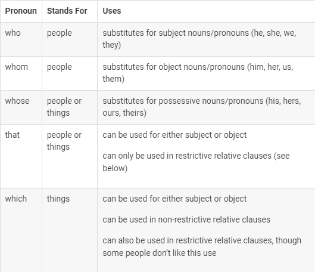

Helped By:
Bimalistyo Suryo.B.P
Created By:
Carl William A.B
Helped By:
Muhammad Faiq.A.F
Relative Clauses | 03

[1] Definition
[1] Types | Relative Clauses
There is some relative pronouns that usually being used in daily converstation,such as:

Relative pronouns as subject (in bold):
Restrictive Relative Clauses
Restrictive relative clauses give information that defines the noun—information that’s necessary for complete identification of the noun. Use “that” or
“which” for non-human nouns; use “that” or “who” for human nouns. Do not use commas.
I like the paintings. (Which paintings? We can’t clearly identify them without the relative clause.)
So we add the clause:
The paintings hang in the SASB North lobby.
I like the paintings that hang in the SASB North lobby.
OR
I like the
paintings which hang in the SASB
North lobby. (Again, this is
acceptable,
but some people object to using “which” in a
restrictive relative clause. “That” is preferred.)
Students who study hard will do well in my
class.(Only this group of students will do well.)
Students whose grades are low can drop one test score. (Only this group can drop a test score.)
Non-restrictive relative clauses
This type of relative clause merely provides extra information. The information may be quite interesting and important to the larger conversation,
but it is not essential for precise identification of the noun. “That” cannot be used as a relative pronoun in a non-restrictive relative clause. Commas are always used at the beginning and end of this type of relative clause.
A
non-restrictive relative clause can modify a single noun, a noun phrase, or an entire proposition.
My mother is thinking of opening a restaurant.My mother is an
excellent cook.
“My mother” is already a clearly defined noun, so the second sentence becomes a non-restrictive relative clause set off by commas on both sides.
My mother, who is an excellent cook, is thinking of opening
a restaurant.
Reducing relative clauses
Some types of relative clauses can be “reduced”— the relative pronoun and maybe other words can be removed. You might reduce the clause to make your writing
more concise or to add sentence variety. We’ll use the examples above to demonstrate how to reduce both restrictive and non-restrictive clauses.Restrictive relative clauses can be reduced in two ways.
1.Subject pronouns can be
deleted if –ing is added to the verb.
I like the paintings that hang in the SASB North lobby.
I like the paintings hanging in the SASB North lobby.
2.Object
pronouns
can be deleted.
I like the bike that my father gave me.
I like the bike my father gave me.
Now after learning this lesson,you should know what is relative clauses and how to use it,to finish our lesson,let's work on
our test.